Escoger
Vamos a la plaza y escogemos flores orgánicas comestibles. Lo que traiga la cosecha de ese día decide los colores de tu pastel.
Pastelería artesanal en Medellín. Pasteles de boda y tortas con flores orgánicas comestibles, pintadas a mano.
Pedir por WhatsAppLas escogemos en las plazas de Medellín, entre lo que trae la cosecha de ese día. Por eso ningún pastel se repite: cada uno lleva sus propias flores.
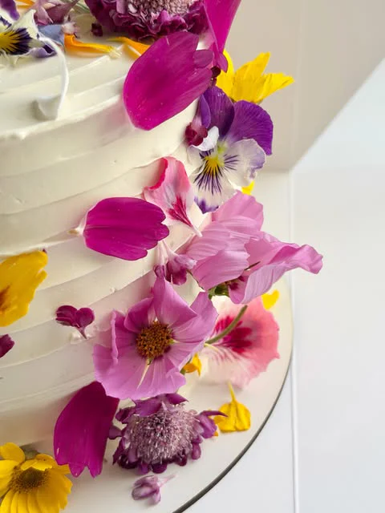
34 pasteles Desliza para ver más y toca uno para verlo grande.
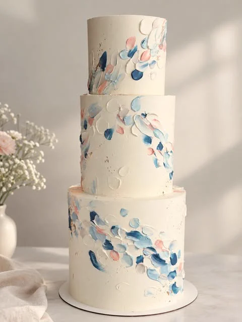
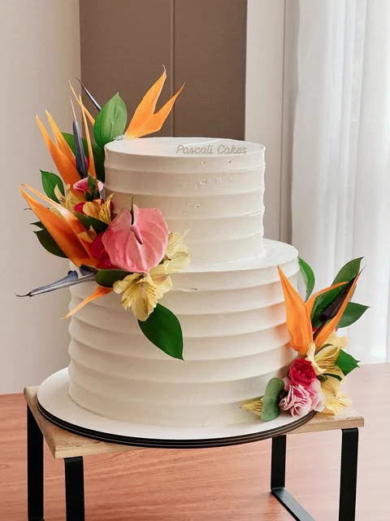
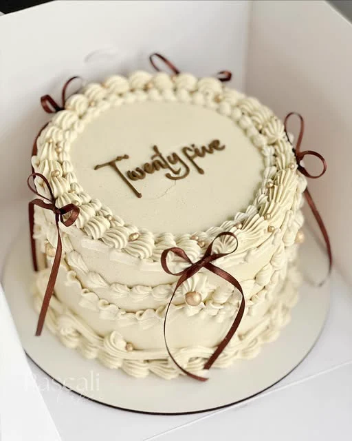
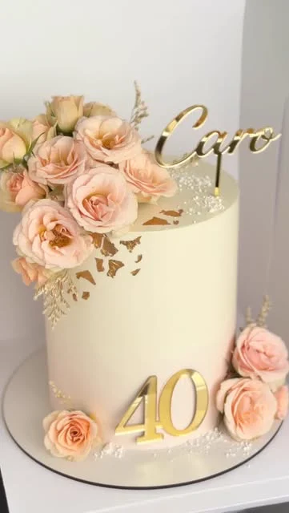
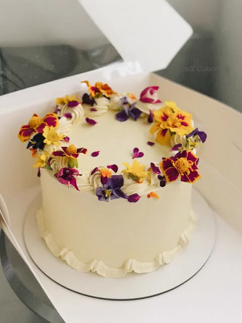
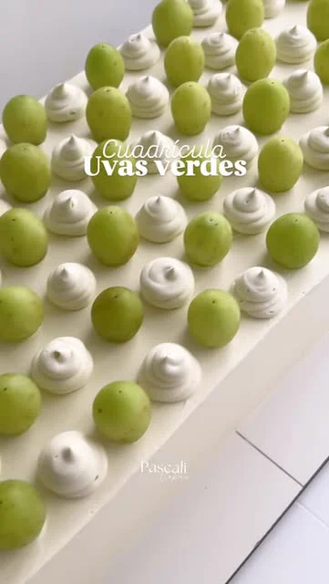
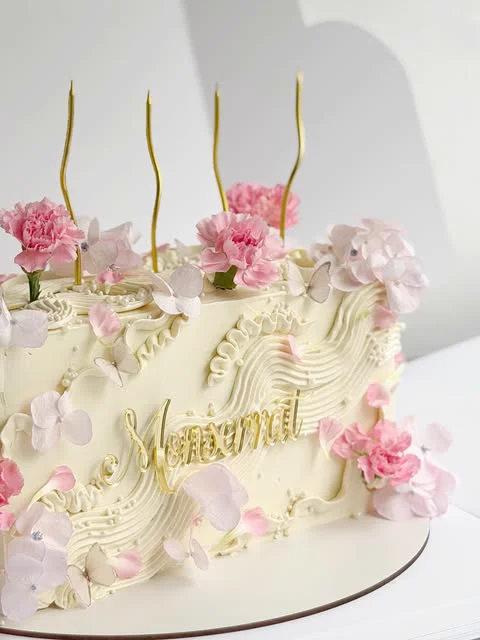
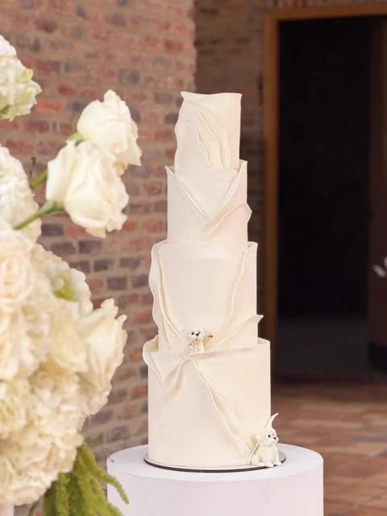
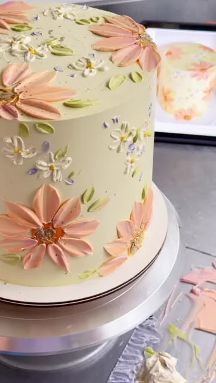
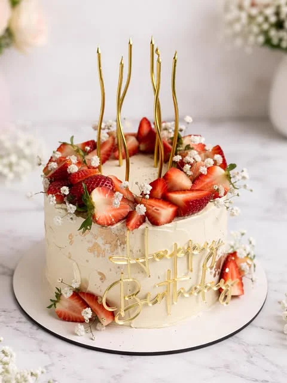
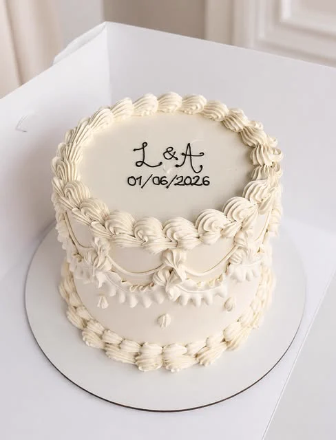
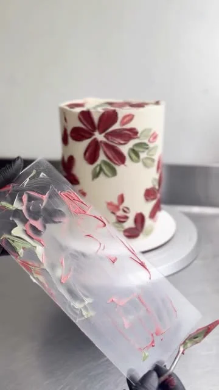
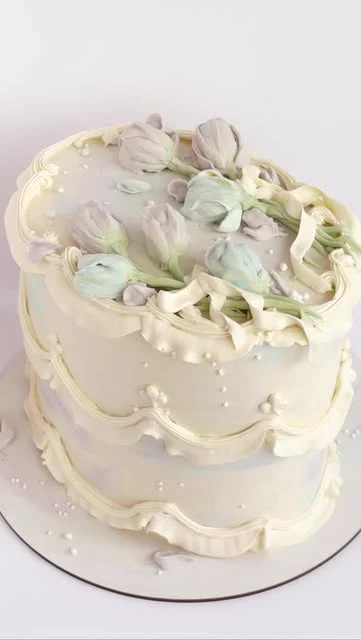
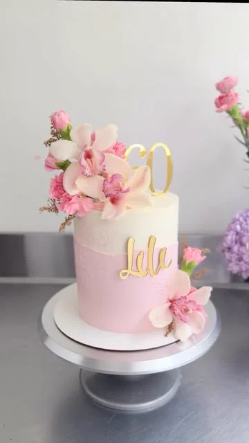
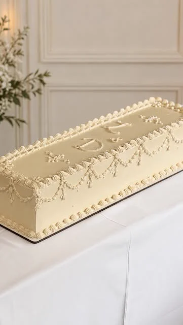
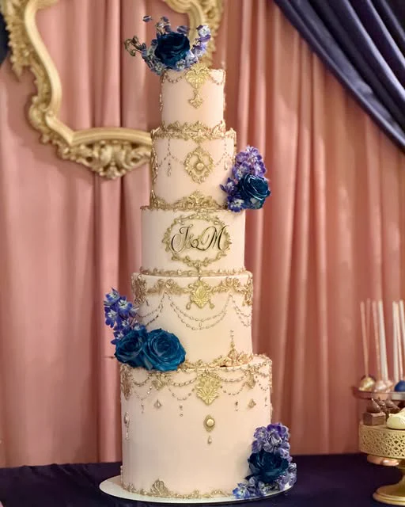
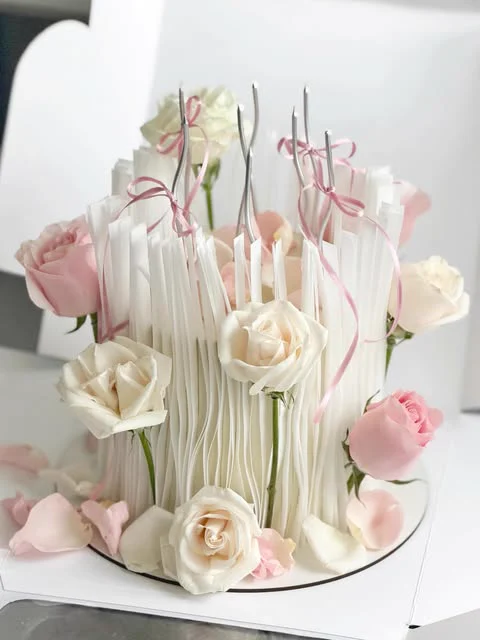
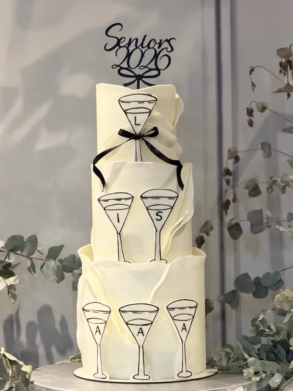
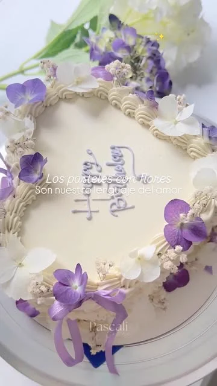
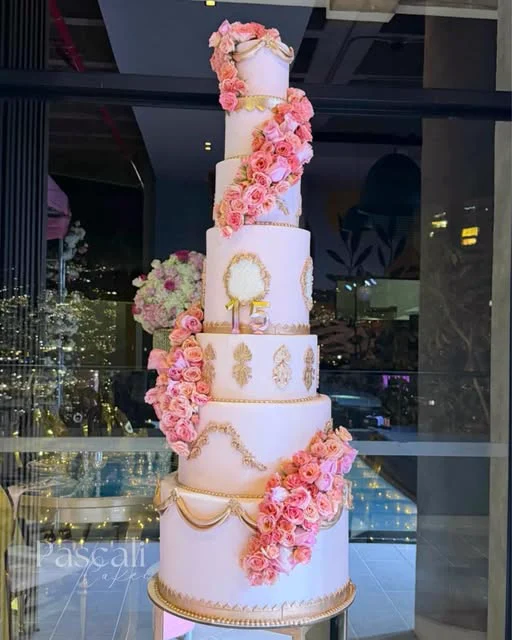
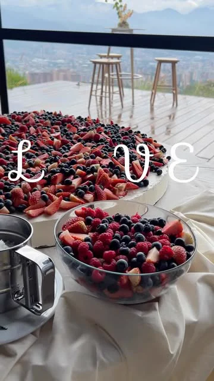
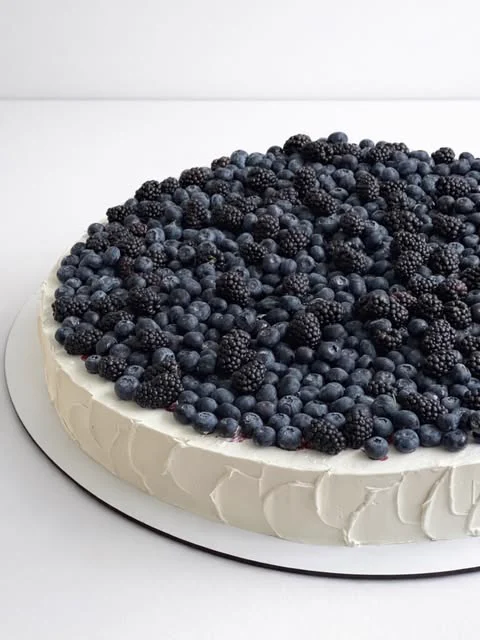
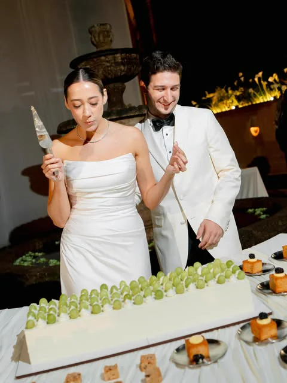
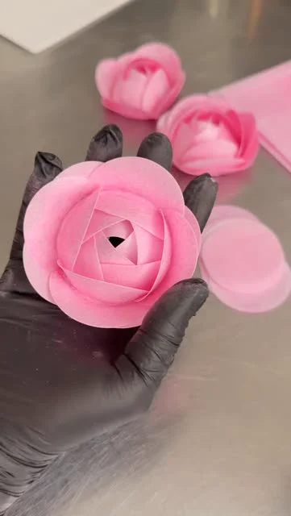
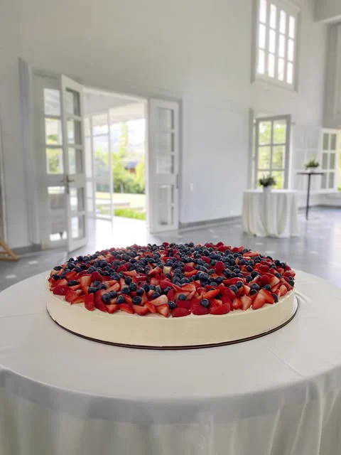
Viajamos a Llanogrande para entregarlo en Zona E: dos pisos con rosas de crema, perlas y el monograma dorado de los novios.
Vamos a la plaza y escogemos flores orgánicas comestibles. Lo que traiga la cosecha de ese día decide los colores de tu pastel.
Horneamos para cada pedido, sin producción en serie. El de zanahoria con frosting de queso crema es uno de los favoritos.
Un pastel en blanco es un lienzo: flores de crema de mantequilla suiza pétalo por pétalo, papel de arroz y acuarela comestible.
Entregamos de lunes a sábado en Medellín y alrededores. En bodas hacemos el montaje en el lugar, del Valle de Aburrá al Oriente.
Elige lo esencial y te dejamos el mensaje listo para WhatsApp. El precio lo cotizamos según el diseño y las porciones.
Con mínimo una semana. Para bodas lo ideal es reservar con un mes; algunos diseños necesitan más tiempo según su complejidad.
Sí. Usamos flores orgánicas comestibles y decoraciones de crema, fondant y papel de arroz, que sabe a oblea de helado. Todo lo que ves en el pastel se puede comer.
El de zanahoria con frosting de queso crema es de los más pedidos. Te enviamos la carta completa de sabores y tamaños por WhatsApp.
De lunes a sábado en Medellín y alrededores. Para bodas hacemos entrega y montaje en el Valle de Aburrá y el Oriente antioqueño.
Claro. Cuéntanos tus colores y flores favoritas y las buscamos en la cosecha del día. Por eso cada pastel floral es único.
Somos una pastelería artesanal: hacemos pocos pasteles por semana para darle a cada uno toda la atención al detalle.